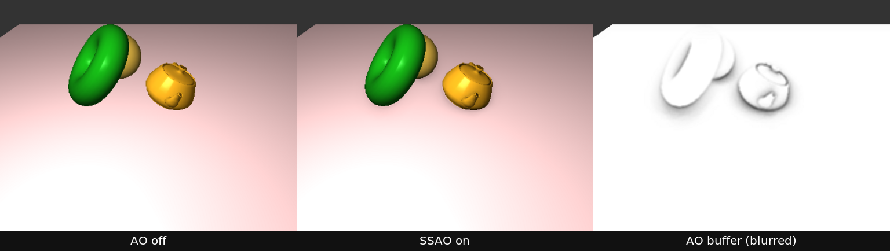

C++ · OpenGLSSAO — Screen Space Ambient Occlusion
Render diferido de 4 pasadas escrito desde cero: G-Buffer con MRT, SSAO con 64 muestras en un hemisferio orientado por la normal y ruido rotado, blur e iluminación Phong modulada por el AO. Los FBO se recrean al redimensionar y el AO se puede activar o inspeccionar en directo.
A 4-pass deferred renderer built from scratch: an MRT G-Buffer, SSAO with 64 normal-oriented hemisphere samples and rotated noise, a blur pass and Phong lighting modulated by AO. FBOs are rebuilt on resize, and AO can be toggled and inspected live.
C++17OpenGL 4GLSLFBO/MRTCMake